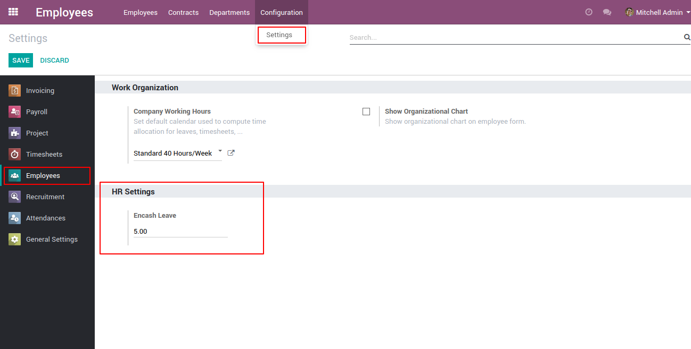
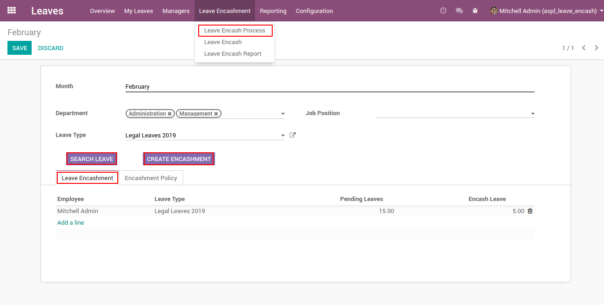
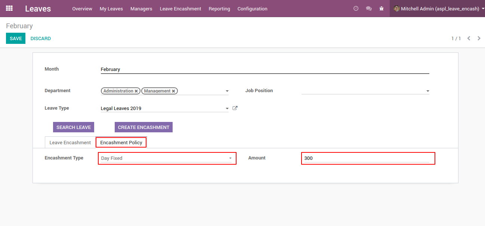
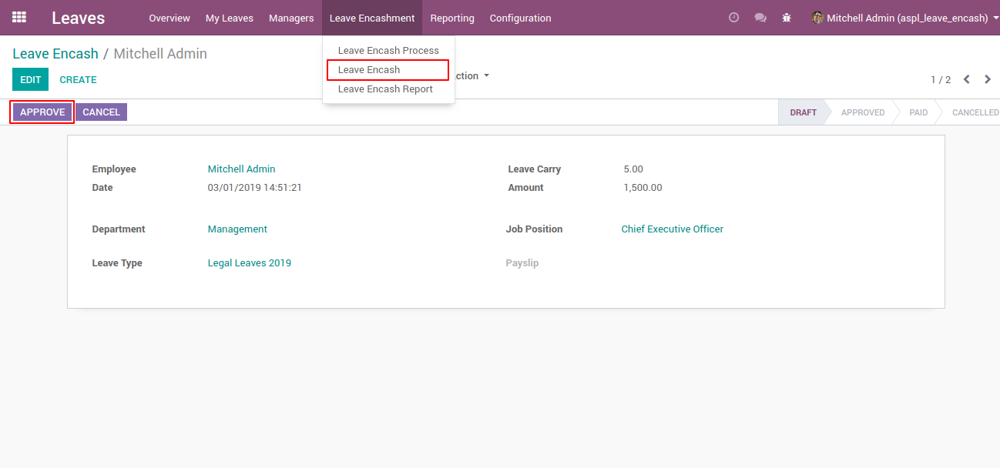
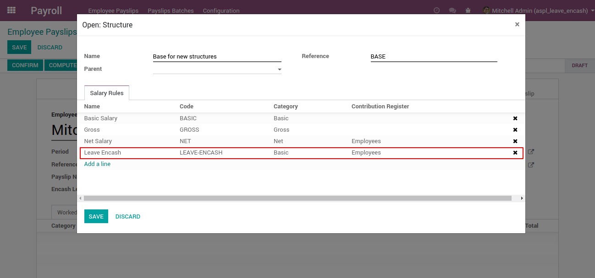
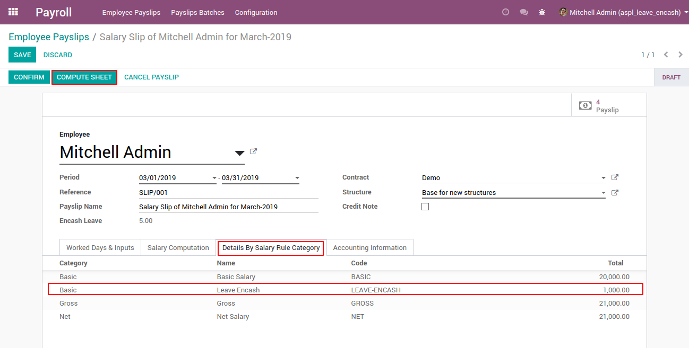
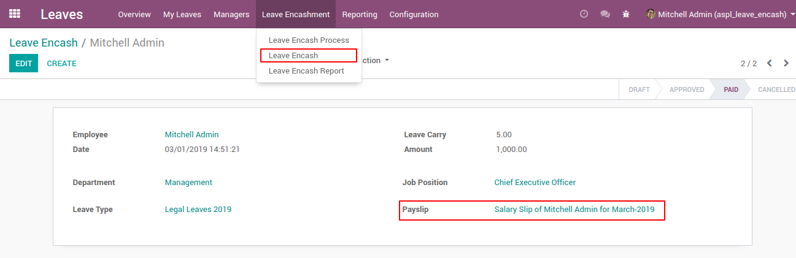
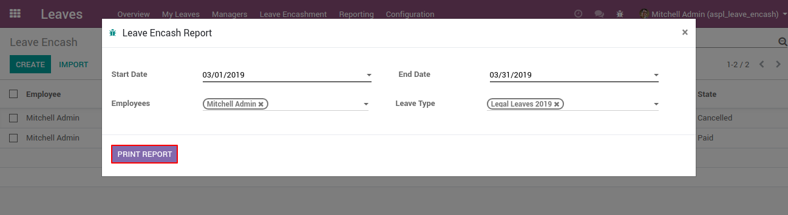
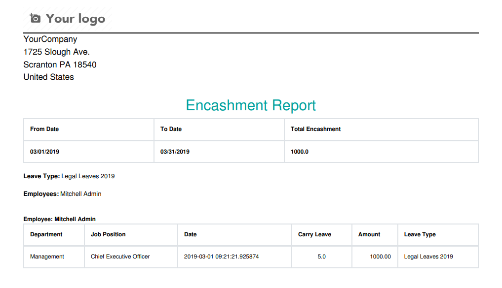

Note: This module is tested and working in Enterprise Edition. And we are supporting Ubuntu OS and not Windows OS.
Features
Give the option how many leaves you want to use to calculate the encash amount based on job position, otherwise in employee settings.
Based on department and job positions filter employee for encashment process.
Give the option to calculate the amount based on day salary or fixed amount.
Add to employee salary at the time generating payslip, if the encashment process is approved by manager.
How to use
Configure to default encashment days.

Here, user can search leave by using filter by Department, Job Position and Leave Type by clicking on Search Leave button.

Select Encashment Policy (Day Fixed or Day Salary) before create encashment by clicking on Create Encashment button.

In Leave Encash Menu clicking on Approve button for apply Leave Encashment.

Base for new structures add Leave-Encash in salary rules.

In Payroll create Employee Payslip, Click on Compute Sheet Button, After clicking on Compute Sheet Button you can see Leave Encash Entry in Details By Salary Rule Category tab. After that click on Confirm Buutton to confirm payslips.

Here, user can see the entry in Payslip as empoyee apply for leave encash.

User can print Leave Encashment report on clicking Leave Encash Report Menu.

Leave Encashment Report.

NOTE: We give 60 days support for our customers. Before trying in your live db, please ask us to provide you for test link. If any other custom modules are installed and because of that some errors occurs then we charge extra.